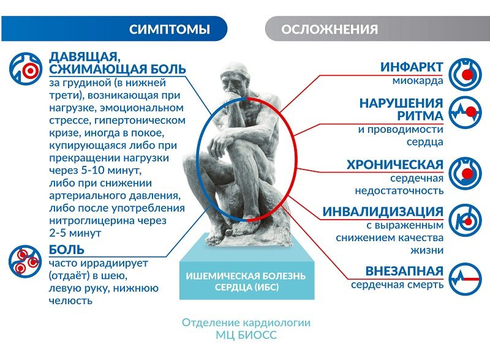

Неинфекционное заболевание – группа нарушений здоровья, которая включает диабет, сердечно-сосудистые заболевания, рак, хронические респираторные болезни, а также аутоиммунные заболевания. Эти нарушения во многом предотвратимы и связаны общими факторами риска. Каждый год от неинфекционных заболеваний (НИЗ) умирает 41 миллион человек, что составляет 71% всех случаев смерти в мире. Каждый год от НИЗ умирает 15 миллионов человек в возрасте от 30 до 69 лет; более 85% этих «преждевременных» случаев смерти приходится на долю стран с низким и средним уровнем доходов. В структуре смертности от НИЗ наибольшая доля приходится на сердечнососудистые заболевания, от которых каждый год умирает 17,9 миллионов человек. За ними следуют раковые заболевания (9 млн. случаев), респираторные заболевания (3,9 млн. случаев) и диабет (1,6 млн. случаев). На эти четыре группы заболеваний приходится 80% всех случаев смерти от НИЗ. Употребление табака, низкий уровень физической активности, злоупотребление алкоголем и нездоровое питание, – все это повышает риск смерти от НИЗ. НИЗ распространены во всех возрастных группах, всех регионах и всех странах. Эти заболевания часто связывают с пожилыми возрастными группами, но фактические данные свидетельствуют о том, что среди всех случаев смерти, связываемых с НИЗ, 17 миллионов регистрируется в возрастной группе от 30 до 69 лет. При этом более 85% этих случаев «преждевременной» смерти имеет место в странах с низким и средним уровнем доходов. Дети, взрослые и пожилые люди — все уязвимы перед факторами риска, способствующими развитию НИЗ, такими как нездоровое питание, недостаточная физическая активность, воздействие табачного дыма или злоупотребление алкоголем. Развитию этих заболеваний способствуют такие факторы, как быстрая и неорганизованная урбанизация, глобализация нездорового образа жизни и старение населения. Последствия нездорового питания и недостаточной физической активности могут проявляться у отдельных людей в виде повышенного кровяного давления, повышенного содержания глюкозы в крови, повышенного уровня липидов в крови и ожирения. Метаболические факторы риска - лишний вес, повышанное кровянное давление, гиперлипидемия, гипергликемия.
Диабет - группа эндокринных заболеваний, связанных с нарушением усвоения глюкозы и развивающихся вследствие абсолютной или относительной (нарушение взаимодействия с клетками-мишенями) недостаточности гормона инсулина, в результате чего развивается гипергликемия — стойкое увеличение содержания глюкозы в крови. Заболевание характеризуется хроническим течением, а также нарушением всех видов обмена веществ: углеводного, жирового, белкового, минерального и водно-солевого. Среди симптомов диабета отмечаются: полиурия, полидипсия, повышенный уровень глюкозы в крови, сниженный уровень инсулина. Сахарный диабет может спровоцировать начало развития сердечно – сосудистых заболеваний. Всемирная организация здравоохранения разделяет диабет на 2 типа: Диабет 1-го или инсулинозависимый диабет – заболевание, при котором подвергаются уничтожению клетки поджелудочной железы, секретирующие инсулин. Массовая гибель эндокринных клеток поджелудочной железы может иметь место в случае вирусных инфекций, онкологических заболеваний, панкреатита, токсических поражений поджелудочной железы, стрессовых состояний, различных аутоиммунных заболеваний, при которых клетки иммунной системы вырабатывают антитела против β-клеток поджелудочной железы, разрушая их. В большинстве случаев проблема состоит в иммунитете, который распознает клетки поджелудочной железы как антиген и впоследствии вырабатывает антитела к ним. Такая форма диабета чаще всего развивается у подростков с 14 – 16 лет. Инсулинозависимым его назвали из – за необходимого постоянного дозирования инсулина в кровь. Этот тип диабета неизлечим. Диабет 2-го типа или инсулинонезависимый диабет – заболевание, которое характеризуется резистентностью к инсулину. При этом его возможно вылечить, в отличии от диабета 1-го типа. Симптомы его менее выражены, по сравнению с диабетом 1-го типа. При диабете 2-го типа все еще возможна секреция инсулина. Существует также непризнанный сахарный диабет 3-го типа. Он отличается по признакам от всех выше приведенных форм заболевания и вызван повреждением поджелудочной железы. Последствия нездорового питания и недостаточной физической активности могут проявляться у отдельных людей в виде повышенного кровяного давления, повышенного содержания глюкозы в крови, повышенного уровня липидов в крови и ожирения.
Повреждения могут спровоцировать воспаления, панкреатит, опухоли или операции на поджелудочной железе, которые со временем не только ухудшают способность организма вырабатывать инсулин, но и продуцировать белки, необходимые для усвоения пищи и других полезных веществ. В частности, среди новых случаев заболевания диабет 1-го типа встречался у одного процента исследуемых людей - а вот форма 3-го типа по была у 1,6% добровольцев. Пациенты также в два раза хуже контролировали содержание сахара в крови по сравнению с обладателями диабета 2-го типа. И в 5-10 раз чаще нуждались в инсулине в зависимости от типа заболевания поджелудочной железы. Также ученые обнаружили, что диабет этого типа может развиться не сразу, а спустя десятилетия после наступления травмы поджелудочной железы. И часто врачи его ошибочно диагностируют как диабет типа 2. Между тем, правильное определение типа диабета важно, поскольку это помогает в выборе правильного лечения. Факторы риска любого типа диабета: избыточный вес, малоакивный образ жизни, а также генетическая предрасположенность. Алкоголь и курение также увеличивают шанс на появление и развитие сахарного диабета, равно как и употребление жирной пищи. Диабет распространен по всему миру. В каждом государстве болезнь является второй проблемой после ИБС. В настоящее время лечение сахарного диабета в подавляющем большинстве случаев является симптоматическим и направлено на устранение имеющихся симптомов без устранения причины заболевания, так как эффективного лечения диабета ещё не разработано. Основными задачами врача при лечении сахарного диабета являются:
Компенсация углеводного обмена достигается двумя путями: путём обеспечения клеток инсулином, различными способами в зависимости от типа диабета, и путём обеспечения равномерного одинакового поступления углеводов, что достигается соблюдением диеты.
Хроническая обструктивная болезнь легких (ХОБЛ) – это прогрессирующее угрожающее жизни заболевание легких, которое характеризуется воспалением дыхательных путей и обструкцией (отеком) бронхов. Эта болезнь не всегда легко диагностируется, что повышает ее опасность. Критерием ХОБЛ является хроническое воспаление, которое поражает центральные дыхательные пути, периферические дыхательные пути, паренхиму легких, альвеолы и сосудистую сетку легких. Главной причиной развития ХОБЛ является ограничение воздушного потока, вызванное воспалительным ответом на вдыхаемые токсины, чаще всего табачный дым, включая пассивное курение.
К основным симптомам хронической обструктивной болезни легких относятся:
Прогрессирование ХОБЛ проявляется усилением кашля и увеличением количества мокроты, которая может быть гнойной. В дальнейшем затруднение дыхания возникает даже при выполнении простых действий — ходьбе или одевании. При этом больные начинают худеть, ощущают необъяснимую слабость, у них появляется цианоз (синюшность) кожи, нарастают признаки сердечной недостаточности, возникают отеки ног, может накапливаться жидкость в брюшной полости (асцит), увеличиваться печень. Обострения могут привести к заметному снижению трудоспособности и потребности в неотложной медицинской помощи (включая госпитализацию). Среди других причин развития болезни — неблагополучная экологическая обстановка (загрязнение воздуха отходами производства, выхлопными газами, дымом, пылью и т.д.), профессиональная деятельность (работа в шахтах, на химических предприятиях, в горячих цехах), климатические условия (повышенная влажность воздуха), инфекционные агенты (микоплазмы, пневмококки, гемофильная палочка, вирусы гриппа, аденовирусы и другие).
Последнее время в мире увеличивается количество заболевших ХОБЛ во всех странах. Обычно его обнаруживают уже на поздней стадии, чем и характеризована высокая смертность от это болезни.
В лечении ХОБЛ фармакологические и нефармакологические методы имеют одинаковую значимость и в отсутствии одного из них достичь ремиссии заболевания будет крайне затруднительно. Из нефармакологических методов наиболее важным является изменение образа жизни – в первую очередь отказ от курения. Если развитие ХОБЛ связано с профессиональными факторами (контакт с мелкодисперсной пылью), то необходимо уменьшить контакт с этими факторами (например, ношением респираторов. В фармакотерапии ХОБЛ основное место занимают ингаляционные препараты, расширяющие просвет бронхов, за счет чего происходит уменьшение выраженности симптомов и замедление прогрессирования заболевания.
Рак – это онкологическое заболевание, которое характеризуется появлением злокачественного образования. Злокачественное образование – это опухоль, появившиеся в результате бесконтрольного деления клеток вследствие генетических нарушений. Бесконтрольно делящиеся клетки игнорируют апоптоз. Это процесс распада клетки, основная функция которой – уничтожение дефектных клеток. В здоровом организме человека этим занимается иммунная система, однако если она не распознает вовремя этот процесс, опухоль начинает разрастаться. В отличии от доброкачественных, злокачественные опухоли крайне быстро разрастаются, попутно вторгаясь в другие ткани и органы, образуя метастазы. Рак может быть у людей всех возрастов, однако чаще он выявляется у пожилых людей. Без лечения рак приводит к летальному исходу, однако шанс на успешное лечение есть, и зависит он от стадии болезни и локализации. 80–90% злокачественных опухолей образуется вследствие воздействия внешних факторов, а не по генетическим причинам. То есть в качестве причины возникновения онкологии выступают канцерогены.
Канцерогены – это факторы, которые при воздействии на человека повышают вероятность возникновения онкологии. Канцерогенами могут быть, например, алкоголь, табак и др. химические вещества выбрасываемые Иногда причиной появления злокачественного образования могут стать чужеродные агенты (такие как грибки, вирусы). Так, папилломавирусная инфекция способна вызывать рак гениталий у мужчин и женщин. Также хроническая форма гепатита C способна перерастать в цирроз печени. Чрезмерное ультрафиолетовое излучение способно вызвать различные мутации, и вместе с ними рак кожи. Симптомы варьируются в зависимости от местоположения опухоли. Боль возникает только на поздних стадиях. На ранних стадиях опухоль почти никогда не вызывает абсолютно никаких ощущений. Некоторые встречающиеся симптомы включают в себя:
Местные симптомы:
симптомы метастазов:
Общие симптомы:
Злокачественные опухоли различаются по типу клеток, из которых они возникают. Виды злокачественных опухолей: карцинома — из эпителиальных клеток (например, рак предстательной железы, лёгких, молочной железы, прямой кишки); меланома — из меланоцитов; саркома — из соединительной ткани, костей и мышц (мезенхима); лейкоз — из стволовых клеток костного мозга; лимфома — из лимфатической ткани тератома — из зародышевых клеток; глиома — из глиальных клеток.
Профилактика раковых заболеваний заключается в снижении влияния канцерогенов на человека, то есть отказ от курения, алкогольных напитков и тд. Не стоит забывать о вакцинации от вирусов, так как они также способны вызывать раковые опухоли (Папилломавирус, вирус гепатита B, C). Основными способами лечения рака являются:

Ишемическая болезнь сердца — острое или хроническое поражение миокарда, возникающее вследствие уменьшения или прекращения снабжения сердечной мышцы артериальной кровью, в основе которого лежат патологические процессы в системе коронарных артерий. ИБС широко распространенное заболевание. Одна из основных причин смертности, временной и стойкой утраты трудоспособности во всем мире. В структуре смертности сердечно-сосудистые заболевания стоят на первом месте, из них на долю ИБС приходится около 40%. Основной причиной нарушения снабжения миокарда кислородом является несоответствие между коронарным кровотоком и метаболическими потребностями сердечной мышцы. Это может быть следствием:
Главный этиологический фактор развития ишемической болезни сердца — атеросклероз коронарных артерий. Атеросклероз развивается последовательно, волнообразно и неуклонно. В результате накопления холестерина в стенке артерии формируется атеросклеротическая бляшка. Избыток холестерина приводит к увеличению бляшки в размере, возникают препятствия току крови. В дальнейшем, под воздействием системных неблагоприятных факторов, происходит трансформация бляшки от стабильной до нестабильной (возникают трещины и разрывы). Запускается механизм активации тромбоцитов и образования тромбов на поверхности нестабильной бляшки. Симптомы усугубляются с ростом атеросклеротической бляшки, постепенно суживающей просвет артерии. Уменьшение площади просвета артерии более чем на 90-95% является критическим, вызывает снижение коронарного кровотока и ухудшение самочувствия даже в покое.
ФАКТОРЫ РИСКА ИБС
Симптомы ИБС:
Также возможна и бессимптомная форма ишемии – когда отсутствуют какие – либо признаки и симптомы типичной ИБС.
Профилактика ишемической болезни сердца представляет собой ведения здорового образа жизни: не курить, не пить, избавиться от лишнего веса, вести активный образ жизни, придерживаться правильного питания (избегать употребления животных жиров, сахара и тд). Лечение бывает медикаментозным и хирургическим. При медикаментозном лечении врачом назначаются препараты, чаще всего это препараты, которые снижают уровень липопротеидов низкой плотности (ЛПНП). Хирургическим же путем осуществляются операции как: Коронарное шунтирование, установка стентов в коронарные артерии.
Инсульт – это острое нарушение кровоснабжения головного мозга. Заболевание может настигнуть человека практически в любой момент, но по статистике женщины от 18 до 40 лет чаще подвержены инсультам, чем мужчины того же возраста, также международная практика показывает, что у женщин смертность от инсульта гораздо выше, чем у мужчин. Одна из главных причин этого - неспецифические симптомы, которые на первый взгляд сложно связать с инсультом. Предвестниками инсульта могут быть следующие признаки: Головная боль, не имеющая конкретной локализации и возникающая при переутомлении или погодных катаклизмах. Головокружение, появляющееся в покое и усиливающееся при движении. Наличие шума в ушах, как постоянного, так и преходящего.«Провалов» памяти на события текущего периода времени. Изменение интенсивности работоспособности и нарушения сна. К данной симптоматике присоединяются такие признаки: Острые головные боли без каких-либо понятных причин; Ухудшение зрения одного или обоих глаз; Появление неожиданной слабости; Непонимание обращенной речи; Частичный или полный паралич конечностей.
Существуют два вида инсульта:
Факторы риска инсульта - Сахарный диабет, различные заболевания сердца, курение, ожирение, повышенное содержание холестерина в крови, злоупотребление алкоголем, стресс, недостаточная физическая активность.
Первые симптомы инсульта:
При подозрении на инсульт, немедленно вызывайте врача.
Профилактика инсульта. У людей после 50 лет происходят нормальные возрастные изменения кровеносных сосудов – снижение эластичности сосудистой стенки, которая может не выдержать резкого повышения давления, например, на фоне стресса или сильных эмоций и физического перенапряжения. Основные профилактические мероприятия предотвращения заболеваний системы сосудов и сердечного органа. Правильное питание, ограничение приема продуктов, содержащих насыщенные жирные кислоты. Увеличение в питании продуктов, содержащих полиненасыщенные жирные кислоты. Постоянные адекватные физические нагрузки на организм Полный отказ от курения. Отказ от употребления алкоголя. Избегание стрессовых ситуаций. Наблюдение за артериальным давлением. Контроль уровня сахара крови, холестерина и липидного профиля. Если врач поставил диагноз гипертония, нужно следить за состоянием давления на постоянной основе.
ПРИ ПОДОЗРЕНИИ У СЕБЯ КАКИХ - ЛИБО СИМПТОМОВ, ОБРАЩАЙТЕСЬ К ВРАЧУ. НЕ ЗАНИМАЙТЕСЬ САМОЛЕЧЕНИЕМ!!!
Создан Гергелюком Т. А.